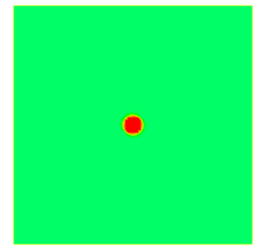

This page showcases some of my past research work on Finite Element Method (with focus on fluid dynamics and fluid-structure interaction), as well as optimization (operations research).

Scientific Computation
I participated in the maintenance and development of IFEM_versatile, which is a scientific computing software aimed at solving fluid-structure interaction (FSI) problems. The core of the IFEM_versatile software is the Immersed Finite Element Method technique, which is a unique approach to efficiently handle FSI; the software can function as a standalone finite element (FE) fluid solver as well. The source codes are written in FORTRAN with MPI (Message Passing Interface), and can be compiled and run on different platforms, e.g. Mac Pro (multiprocessor server) and IBM Blue Gene (supercomputer).
A few computation cases are demonstrated here to showcase my work. The examples are to display computations on FSI cases, CFD cases, and acoustics cases where non-reflective BCs are important.
I. Fluid-Structure Interaction between Laryngeal Airflow and Vocal Folds
This is a numerical simulation of a classical fluid-structure interaction process: phonation. Airflow is being forced out of the lungs, and needs to push open the gap between the vocal folds, in order to travel through the larynx, the pharynx, and eventually the mouth or the nasal cavity into the external environment. The pressure variation and modulation (corresponds to acoustic wave generation and filtration) in this process is what is perceived as voice.
Laryngeal airflow driving, and in return regulated by, vocal fold vibrations
II. Vortex shedding past a cylinder, with vortices being absorbed by PML
This is a direct numerical simulation of the famous vortex shedding past an obstacle (a cylinder in this case). There is an absorption region (Perfectly Matched Layer) covering one-fourth of the channel length on the right, where the vortices are clearly seen being absorbed; the absorption is to make sure the reflection effect of a finite channel length is subdued.
Vortex shedding past a circular cylinder; vortices are absorbed in PML on the right-hand side of the domain
(domain colored by vorticity, superimposed by velocity vector field)
III. Acoustic Propagation with Proper Application of Perfectly Matched Layers (PML)
These are various numerical simulations of acoustic wave propagation: the sound sources in the first two are initial pressure perturbation, while those in the second two are vibrating structures. In these cases, the simulation are extremely sensitive to the reflection effect from the boundaries of finite computational domain; therefore, Perfectly Matched Layers are applied to absorb outgoing waves.
-
Initial pressure point source
 An initial pressure point source with PML; note that outgoing waves are absorbed in the PML near the domain boundaries.


An initial pressure point source without PML; note that the spurious reflections on the domain boundaries contaminated the pressure field.


-
Initial pressure point source, off-centered
An initial pressure point source with PML; note that outgoing waves are absorbed in the PML near the domain boundaries.
An initial pressure point source without PML; note that the spurious reflections on the domain boundaries contaminated the pressure field.
-
Left-right vibrating source
A vibrating source with PML; note that outgoing waves are absorbed in the PML near the domain boundaries.
A vibrating source without PML; note that the spurious reflections on the domain boundaries contaminated the pressure field.
-
Spiraling vibrating source
A spiraling source with PML; note that outgoing waves are absorbed in the PML near the domain boundaries.
A spiraling source without PML; note that the spurious reflections on the domain boundaries contaminated the pressure field.
Optimization
These are optimization projects I worked on, with teammates, as competition entries to Modeling and Optimization: Theory and Applications (MOPTA) conferences in 2014 and 2015. Our two projects won Honorable Mention in 2014 and Second-place in 2015 respectively.
I. Utility Pricing for Different Categories of Customers
This competition asks to set the energy prices, for 5 categories of customers and for different hours of the day respectively, in order to maximize the total revenue. The customers' energy consuming behavior would be affected by the price. (Intuitively the higher the prices are, the less energy the customers are going to consume. There are certain data based on which this behavior can be modeled.) The constraints include:
The optimal energy price scheme is presented with tabular data and graphs, along with the expected energy consumption rate.
II. Robust Project Scheduling
This competition asks to select certain projects to undertake, and determine when to initiate these projects, in order to maximize the net profit adjusted by a discount rate (sum of revenues discounted by their respective finish time, minus the sum of costs discounted by their respective start time). Constraints for this optimization problem are:
An extension of this problem is to also consider "bad-luck scenarios", i.e. each project may experience delay after initiation, may simply fail, or may even fail after being delayed. A deterministic approach considers the scenarios known beforehand, while a robust approach designs a schedule that still generates maximum possible amount of profit while making sure the worst outcome under this schedule would not incur a loss larger than the given "bad-luck budget".
The optimal schedule is presented with Gantt charts and expected discounted profit, in comparison to its worst-scenario outcome.
* Last updated in Dec. 2016.